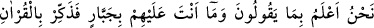
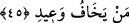

mecrûrun önce zikredilmesi, bu işin Allah için kolay olduğunu husûsen zikretmek
içindir. Zira bu iş yalnızca zatında âlim ve kàdir olan ve yaptığı bir iş başka bir iş
yapmasına engel teşkil etmeyen Allah’a kolay gelir. “Sizin yaratılmanız ve öldükten
sonra tekrar diriltilmeniz bir tek insanı yaratmak ve diriltmek gibidir” (Lokman,
31/28) âyetinde de beyan edildiği gibi.
45. Biz onların dediklerini çok iyi biliriz. Sen onların üzerinde bir zorlayıcı
değilsin. Tehdidimden korkanlara Kur’an’la öğüt ver.
“Biz onların dediklerini biliyoruz.” Yani dirilmeyi inkâr ettikleri, bunu dile getiren
âyetleri yalanladıkları ve de hiçbir hayır barındırmayan diğer sözlerini biliyoruz. Bu
âyet, Rasûlullah (s.a.) için bir tesellî ve de kâfirlere karşı bir tehdiddir. “Sen onlar
üzerinde bir zorba değilsin.” Yani onları zorla iman ettirecek yahut onlara dilediğini
yapacak birisi değilsin. Sen yalnızca bir hatırlatıcısın. “Sen bir hatırlatıcısın, onların
üzerinde bir zorba değilsin” (Ğâşiye, 88/21-22) âyetlerinde de beyan edildiği gibi.
Yani sen onları istediğin şeyleri yapmaya zorlayacak birisi değilsin. Bu âyette geçen
“cebr” kelimesi aslında bir şeyi bir tür zor kullanmak yoluyla ıslah etmek demektir.
Allah’ın isimlerinden birisi olan Cebbâr’ın anlamı da kullarını istediği şeyi yapmaya
zorlayan demektir.
“Tehdidimden korkanlara Kur’an’la öğüt ver.” Onlara Kur’ân’daki öğütlerle öğüt
ver. Zira bundan istifâde edeceklerdir. Nitekim “Sen hatırlat, zira hatırlatmanın
müminlere faydası dokunur” (ez-Zâriyât, 51/55) âyetinde de aynı hususa yer
verilmektedir. “Muhakkak sen zikre tâbi olan ve Rahman’da ğayb ile haşyet duyanı
uyarırsın” (Yasin, 36/11) âyetinde de uyarı ve öğüdün kimlere fayda vereceği beyan
edilmektedir. Bunların dışında kalan yani öğüt almayanlarla ise biz ilgileniriz onlara
sözlerinin gerektirdiği ve amellerinin doğurduğu türlü azab ve muhtelif cezâlara
çarptırırız. Vaîd, bir kimseyi azabla korkutmaktır. Bununla birlikte, daha önce de geçtiği
üzere, bizzat azab hakkında da kullanılır.
Âriflerden biri şöyle demiştir: Allah Teâlâ nebîsine azametinden haşyet duyanları ve
büyüklüğünden (kibriyâ) korkanlara Kur’ân ile hatırlatmada bulunmasını, öğüt
vermesini emretti. Çünkü onlar ehl-i Kur’ân’dır. Ehl-i Kur’ân da ehlullah’tır ve onun
has kullarıdır. Onlar, hitabın hakikatlerini ubûdiyet sıfatıyla bilirler, Kur’ân ile onun
derinliklerine doğru yükselirler ve Hakk’ı Hak ile perdesiz görürler. Kur’ân ile
ebediyete yükselirler.
Ahmed b. Hemdân (rh.a.) şöyle demiştir: Kur’ân’ın öğütlerinden yalnızca imanları
ve islamlarından, alıp verdikleri bütün nefeslerinden korku duyanlar öğüt alabilirler.